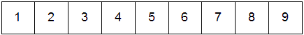

Squaring this:
Results in this:1 2 3 4 5 6 7 8 9
Aftering the main thread allocates the memory and reads the input matrix from the file into the memory:30 36 42 66 81 96 102 126 150
After the main thread allocates memory for the resulting matrix:
This is the how the first thread calculates the value:
Row 0:
Column 0:
Writes to first integer in the result matrix:
This is how the 6th thread calculates the value:
Row 1:
Column 2:
Writes to 6th integer in the result matrix:
Aftering each thread has written its result to the matrix: